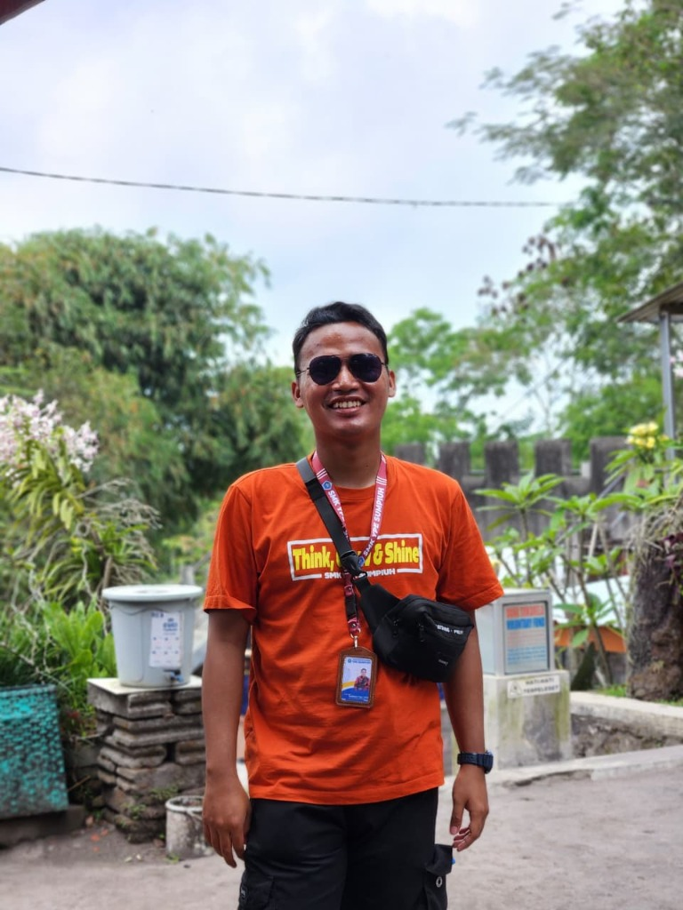

E-Portfolio Digital
Refleksi Pengalaman Belajar Semester I
Fadilatul Fajri, S.Pd.
Program Studi: Pendidikan Pancasila dan Kewarganegaraan (PPKn)
Perguruan Tinggi: Universitas Muhammadiyah Purwokerto
Tema Besar: Menumbuhkan Guru Reflektif, Berkarakter & Adaptif

Calon Guru Profesional
Fadilatul Fajri, S.Pd.
Menu Utama E-Portfolio
Pilih modul atau 7 topik refleksi mata kuliah Semester I untuk mendalami perjalanan belajar.
Visi Pendidikan
Arah transformasi & perumusan visi pendidik berlandaskan Profil Pelajar Pancasila.
Filosofi Pendidikan
Pemikiran Ki Hadjar Dewantara, Sistem Among & menuntun kodrat anak.
PPDP
Pemahaman Peserta Didik, profiling karakteristik & teori perkembangan.
PMAD
Prinsip Pengajaran & Asesmen Efektif dengan kerangka UbD & asesmen autentik.
PPL Terbimbing
Praktik mengajar nyata di sekolah: Plan, Teach, Observe, Reflect, Improve.
Pola Pikir Bertumbuh
Perubahan Fixed Mindset menuju Growth Mindset dalam profesi guru.
Pembelajaran Berdiferensiasi
Mengakomodasi keberagaman kesiapan, minat, dan cara belajar siswa melalui diferensiasi konten, proses, produk, & lingkungan.
Fadilatul Fajri, S.Pd.
PPG Calon Guru Gelombang 1 Tahun 2026
Pendidikan Pancasila dan Kewarganegaraan
Universitas Muhammadiyah Purwokerto
Tentang Saya
TENTANG SAYA
Seorang calon guru Pendidikan Pancasila yang memiliki ketertarikan mendalam pada dunia pendidikan, pembelajaran yang berpusat pada murid, pengembangan karakter kebangsaan, serta penciptaan iklim belajar yang bermakna.
INSPIRASI MENJADI GURU
Terinspirasi dari pengalaman mengajar langsung dan sosok guru yang senantiasa memberikan teladan luhur, motivasi tanpa pamrih, serta pengalaman belajar yang menggugah nalar dan hati.
TUJUAN
Menjadi guru profesional yang mampu memahami kebutuhan individual murid, menciptakan pembelajaran yang interaktif dan kontekstual, serta terus bertumbuh melalui refleksi berkelanjutan.
HARAPAN
Menjadi pendidik yang senantiasa reflektif, adaptif menghadapi dinamika zaman, berintegritas, dan mampu memfasilitasi setiap murid berkembang sesuai potensi dan kodrat kemerdekaannya.
Refleksi Pengalaman Belajar
Perjalanan belajar dan perkembangan diri selama Semester I PPG Calon Guru
Tujuh topik mata kuliah saling bertaut membentuk fondasi pedagogik, kematangan sosial-emosional, serta identitas profesional saya sebagai calon pendidik Pendidikan Pancasila dan Kewarganegaraan.
Visi Pendidikan
Landasan arah & cita-cita pendidik
Filosofi Pendidikan
Sistem Among & Pemikiran KHD
PPDP
Karakteristik & Perkembangan Murid
PMAD
Prinsip Pengajaran & Asesmen UbD
PPL Terbimbing
Praktik Mengajar Nyata di Kelas
Pola Pikir Bertumbuh
Growth Mindset Pendidik
Diferensiasi
Pembelajaran Berpusat Murid
Visi Pendidikan
Membangun Fondasi dan Arah Pendidik Profesional Berkarakter Pancasila
Apa yang Saya Pelajari?
- Konsep visi pendidikan nasional dan arah transformasi kurikulum abad ke-21.
- Penyusunan visi pribadi guru yang berorientasi pada Profil Pelajar Pancasila.
- Peran guru sebagai agen perubahan moral dan etika kewarganegaraan peserta didik.
Hal yang Paling Bermakna
- Menyadari visi guru bukan sekadar formalitas dokumen, melainkan jiwa yang menjiwai setiap interaksi di kelas.
- Pentingnya membangun keteladanan nyata dalam menanamkan nilai-nilai Pancasila.
- Pendidikan sebagai proses memanusiakan manusia seutuhnya (*humanisasi*).
Perubahan Pemahaman Saya
- Semula memandang guru sebatas pengajar materi teks menjadi arsitek peradaban dan karakter murid.
- Memahami bahwa visi pembelajaran harus berakar pada kebutuhan riil konteks peserta didik.
- Refleksi kritis menjadi instrumen esensial untuk menjaga keselarasan visi dengan tindakan.
Relevansi bagi Saya sebagai Calon Guru
- Menjadi kompas navigasi dalam merancang modul ajar dan iklim kelas PPKn yang demokratis.
- Memperkuat komitmen profesional dalam membimbing murid menjadi warga negara yang sadar hak dan kewajiban.
- Menumbuhkan konsistensi etis dalam pengambilan keputusan pembelajaran.
Filosofi Pendidikan
Pemikiran Ki Hadjar Dewantara, Sistem Among, dan Kodrat Murid
Apa yang Saya Pelajari?
- Pendidikan sebagai tuntunan hidup tumbuhnya anak sesuai kodrat alam dan kodrat zaman.
- Prinsip *Trilogi Kepemimpinan* KHD: *Ing Ngarso Sung Tulodo, Ing Madyo Mangun Karso, Tut Wuri Handayani*.
- Penyelarasan budi pekerti (Cipta, Rasa, Karsa, dan Pekerti) dalam pembelajaran.
Hal yang Paling Bermakna
- Analogi petani merawat padi: guru tidak bisa memaksakan padi menjadi jagung, melainkan menyediakan media dan perawatan terbaik.
- Pendidikan yang memerdekakan lahir dan batin, menjunjung martabat peserta didik.
- Peran guru sebagai penuntun (*pamong*), bukan pengatur otoriter.
Perubahan Pemahaman Saya
- Menyadari bahwa anak bukanlah kertas kosong (*tabula rasa*), melainkan telah memiliki garis potensi samar.
- Tugas guru adalah menebalkan garis-garis kebaikan dan memfasilitasi penemuan jati diri murid.
- Pembelajaran harus adaptif terhadap perkembangan teknologi tanpa kehilangan akar kearifan lokal.
Relevansi bagi Saya sebagai Calon Guru
- Menerapkan pembelajaran PPKn yang berhamba pada murid dengan pendekatan dialogis dan partisipatif.
- Menciptakan ruang kelas yang aman, nyaman, dan bebas dari intimidasi atau hukuman destruktif.
- Menanamkan nilai-nilai kebangsaan secara organik melalui keteladanan nyata.
Pemahaman Peserta Didik & Pembelajarannya (PPDP)
Memahami Karakteristik, Tahap Perkembangan, dan Keberagaman Belajar Murid
Apa yang Saya Pelajari?
- Teori perkembangan kognitif (Piaget/Vygotsky) dan psikososial peserta didik usia remaja.
- Penyusunan instrumen *profiling* peserta didik (minat, latar belakang sosial-budaya, gaya belajar).
- Prinsip *Developmentally Appropriate Practice* (DAP) dan *Culturally Responsive Teaching* (CRT).
Hal yang Paling Bermakna
- Pemahaman bahwa kegagalan siswa sering kali bukan karena kurang kemampuan, melainkan ketidaksesuaian metode pengajaran dengan gaya belajar mereka.
- Pentingnya membangun ikatan emosional (*rapport*) dan rasa aman sebelum menuntut capaian akademis.
- Menghargai keberagaman budaya murid sebagai modalitas belajar PPKn yang kaya.
Perubahan Pemahaman Saya
- Meninggalkan generalisasi bahwa semua murid di dalam satu kelas memiliki kesiapan dan motivasi yang seragam.
- Menyadari bahwa observasi awal dan asesmen diagnostik non-kognitif adalah langkah krusial sebelum memulai pembelajaran.
- Pendekatan berpusat pada murid menuntut fleksibilitas rencana pembelajaran.
Relevansi bagi Saya sebagai Calon Guru
- Mampu memetakan kebutuhan spesifik murid di kelas PPKn untuk menyusun intervensi pembelajaran yang tepat sasaran.
- Membangun komunikasi dua arah yang empatik dengan peserta didik dan rekan sejawat.
- Merancang materi kewarganegaraan yang kontekstual dan dekat dengan realitas kehidupan murid.
Prinsip Pengajaran & Asesmen (PMAD)
Merancang Pembelajaran Efektif melalui Backward Design & Asesmen Autentik
Apa yang Saya Pelajari?
- Konsep kerangka *Understanding by Design* (UbD): menetapkan hasil akhir, bukti asesmen, lalu aktivitas ajar.
- Perbedaan dan integrasi asesmen diagnostik, formatif (*as & for learning*), dan sumatif (*of learning*).
- Penyusunan modul ajar PPKn yang koheren, terukur, dan berbasis capaian pembelajaran (CP).
Hal yang Paling Bermakna
- Menyadari fungsi utama asesmen bukan sekadar memberi label nilai angka, melainkan sarana umpan balik untuk perbaikan belajar.
- Kekuatan asesmen autentik (studi kasus, debat konstitusi, proyek kewarganegaraan) dalam menguji nalar kritis siswa.
- Penyelarasan yang presisi antara tujuan pembelajaran dengan rubrik penilaian.
Perubahan Pemahaman Saya
- Dari menyusun aktivitas mengajar terlebih dahulu menjadi merumuskan bukti ketercapaian pemahaman mendalam terlebih dahulu.
- Asesmen formatif harus dilakukan secara kontinu di tengah proses pembelajaran, bukan hanya di akhir bab.
- Kriteria penilaian harus transparan dan dipahami bersama oleh murid sejak awal.
Relevansi bagi Saya sebagai Calon Guru
- Kemahiran dalam merancang perangkat ajar PPKn yang terstruktur dan bermakna.
- Mampu memberikan umpan balik deskriptif yang memotivasi siswa untuk merefleksikan kemajuan dirinya.
- Pemanfaatan data asesmen sebagai pijakan menyusun tindak lanjut pembelajaran remedial dan pengayaan.
PPL Terbimbing
Praktik Pengalaman Lapangan di Sekolah Mitra & Siklus Pembelajaran Nyata
Pengalaman yang Dijalani
Melakukan observasi kultural sekolah, asistensi mengajar, merancang modul ajar terbimbing bersama Guru Pamong & DPL, serta mengajar mandiri di kelas PPKn nyata.
Tantangan yang Ditemui
Mengelola fokus dan antusiasme siswa saat jam pelajaran siang, manajemen alokasi waktu kegiatan diskusi, serta mengatasi rasa pasif beberapa peserta didik.
Pembelajaran yang Diperoleh
Pengelolaan kelas yang kondusif berakar pada kesepakatan kelas yang partisipatif dan kemampuan guru menggunakan variasi stimulus pembelajaran yang menarik.
Perubahan yang Dirasakan
Meningkatnya kepercayaan diri, ketenangan saat memfasilitasi interaksi kelas, serta kepekaan insting pedagogik dalam merespons pertanyaan tidak terduga dari siswa.
Hal yang Akan Saya Perbaiki (Komitmen Perbaikan)
Mengoptimalkan pemanfaatan media pembelajaran digital interaktif berbasis kuis/studi kasus nyata, memperdalam teknik *probing question* dalam diskusi nilai Pancasila, serta menyusun umpan balik tertulis yang lebih personal bagi setiap murid.
Pola Pikir Bertumbuh (Growth Mindset)
Transformasi Paradigma dari Pola Pikir Tetap Menuju Pembelajar Sepanjang Hayat
FIXED MINDSET (Pola Pikir Tetap)
Menganggap bakat mengajar adalah kodrat statis; memandang kesulitan sebagai kegagalan; defensif terhadap kritik dan umpan balik.
GROWTH MINDSET (Pola Pikir Bertumbuh)
Kemampuan pedagogik dapat terus diasah melalui dedikasi dan refleksi; memandang tantangan sebagai peluang belajar (*learning process*).
Pemahaman Awal
Sempat merasa cemas dan ragu akan kapasitas diri saat berhadapan dengan situasi kelas yang kompleks dan beragam.
Hal yang Menyadarkan
Pemahaman konsep *the power of yet* (belum bisa, bukan tidak bisa) dan telaah bahwa kegagalan mengajar adalah data untuk perbaikan.
Perubahan Cara Berpikir
Terbuka menerima masukan dari DPL, Guru Pamong, dan rekan sejawat sebagai nutrisi pengembangan profesional.
Penerapan dalam Diri
Mengapresiasi usaha, proses berpikir, dan ketekunan murid daripada semata menuntut skor angka sempurna.
Komitmen untuk Terus Bertumbuh
Bertekad menjadi guru pembelajar sepanjang hayat (*lifelong learner*), aktif mengeksplorasi metodologi inovatif, dan menjunjung budaya refleksi diri.
Pembelajaran Berdiferensiasi
Memenuhi Keberagaman Kebutuhan, Kesiapan, dan Minat Setiap Peserta Didik
SETIAP MURID BERBEDA & UNIK
Apa yang Saya Pelajari?
- Strategi implementasi 4 elemen diferensiasi: Konten, Proses, Produk, dan Lingkungan Belajar.
- Pemberian pendampingan berjenjang (*scaffolding*) sesuai kesiapan (*readiness level*) murid.
- Penyusunan penugasan berbasis minat siswa tanpa mengurangi kedalaman kompetensi inti.
Hal yang Paling Bermakna
- Keadilan dalam pendidikan bukan memperlakukan semua anak secara sama, melainkan memberikan apa yang mereka butuhkan untuk sukses.
- Melihat antusiasme murid meningkat drastis saat diberikan pilihan bentuk unjuk kerja sesuai minatnya.
Perubahan Pemahaman Saya
- Diferensiasi bukan berarti guru harus mengajar dengan 30 rencana pembelajaran berbeda untuk 30 murid.
- Diferensiasi adalah pola pikir fleksibel dalam merancang rute belajar yang variatif dan adil.
Bagaimana Saya Akan Menerapkannya?
- Melakukan pemetaan awal profil belajar peserta didik di awal semester pembelajaran PPKn.
- Menyediakan variasi produk unjuk kerja materi norma dan hukum (esai kritis, infografis, video simulasi).
- Menciptakan sudut belajar yang fleksibel dan kolaboratif di dalam kelas.
Perjalanan Belajar Saya
Dari Memahami Pendidikan hingga Memahami Peran Saya sebagai Guru
AWAL
Memahami visi dan hakikat sejati pendidikan.
MEMAHAMI
Mengenal filosofi KHD & karakteristik peserta didik.
MENGALAMI
Menghadapi praktik nyata melalui PPL Terbimbing.
BERTUMBUH
Mengembangkan Growth Mindset pembelajar.
MENERAPKAN
Merancang pembelajaran berdiferensiasi & bermakna.
MENJADI
Calon guru reflektif, adaptif, dan terus belajar.
REFLEKSI SINTESIS SEMESTER I
“Apa perubahan terbesar dalam diri saya setelah mengikuti pembelajaran Semester I?”
Perubahan terbesar dalam diri saya setelah menempuh seluruh rangkaian pembelajaran Semester I PPG Calon Guru adalah pergeseran paradigma mendasar dari sekadar “pengajar yang mentransfer isi buku teks kurikulum” menjadi seorang “pendidik fasilitator yang menuntun kodrat dan memerdekakan potensi peserta didik”. Kini saya meyakini bahwa keberhasilan proses pembelajaran PPKn bukan diukur dari seberapa cepat materi diselesaikan, melainkan dari seberapa bermakna murid mengalami pembelajaran yang menghargai keberagaman minat, melatih nalar kritis, dan menumbuhkan budi pekerti luhur sebagai warga negara yang berintegritas.
Let's Connect
Mari berkolaborasi, berdiskusi, dan berbagi inspirasi pendidikan untuk kemajuan generasi bangsa.
Fadilatul Fajri, S.Pd.
PPG Calon Guru Gelombang 1 2026
Pendidikan Pancasila dan Kewarganegaraan
TERIMA KASIH
“Menjadi guru bukan tentang berhenti belajar, tetapi tentang terus bertumbuh untuk menjadi pendidik yang lebih baik.”
Fadilatul Fajri, S.Pd.
Pendidikan Profesi Guru (PPG) Calon Guru Gelombang 1 Tahun 2026
Program Studi Pendidikan Pancasila dan Kewarganegaraan
Universitas Muhammadiyah Purwokerto